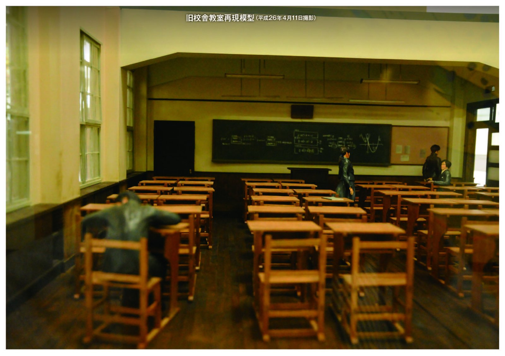
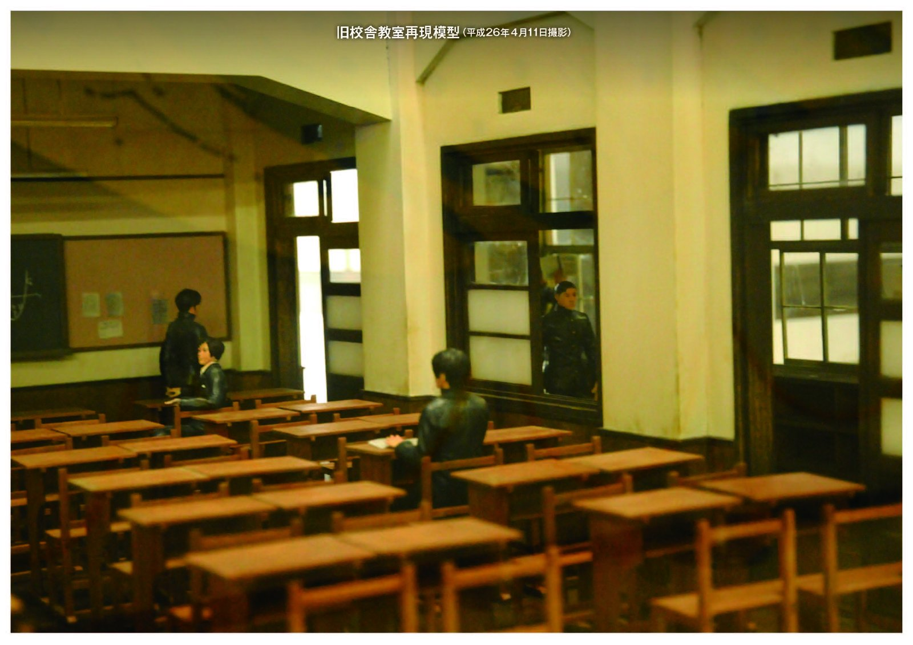
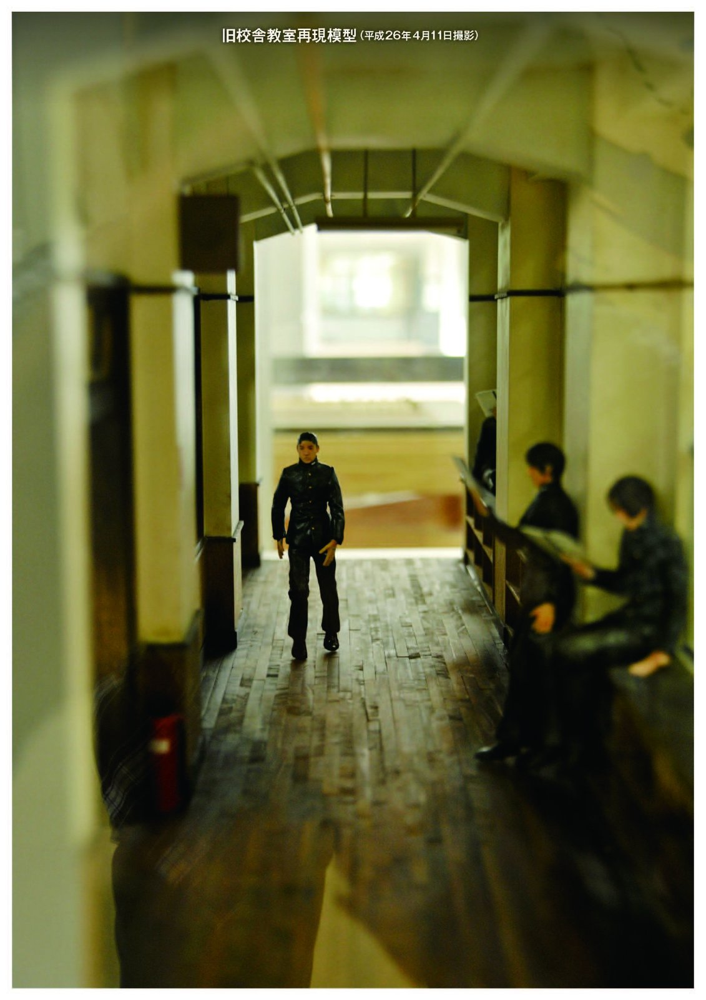
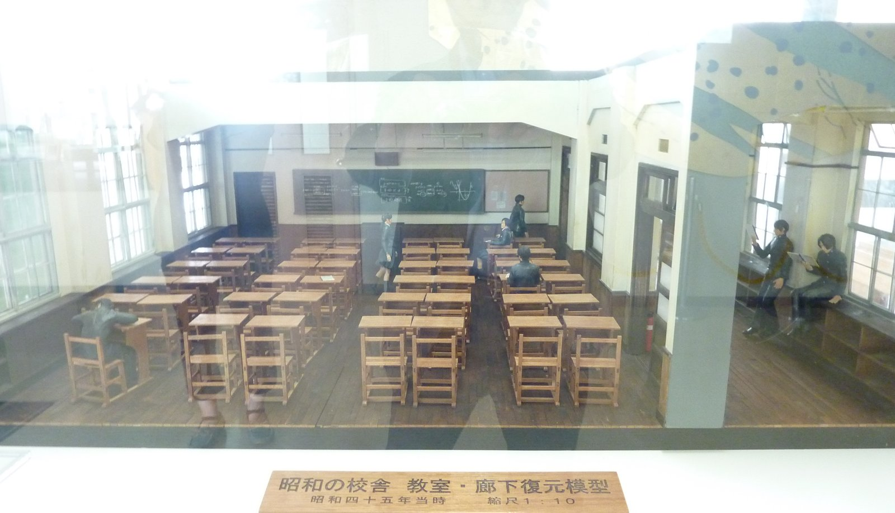
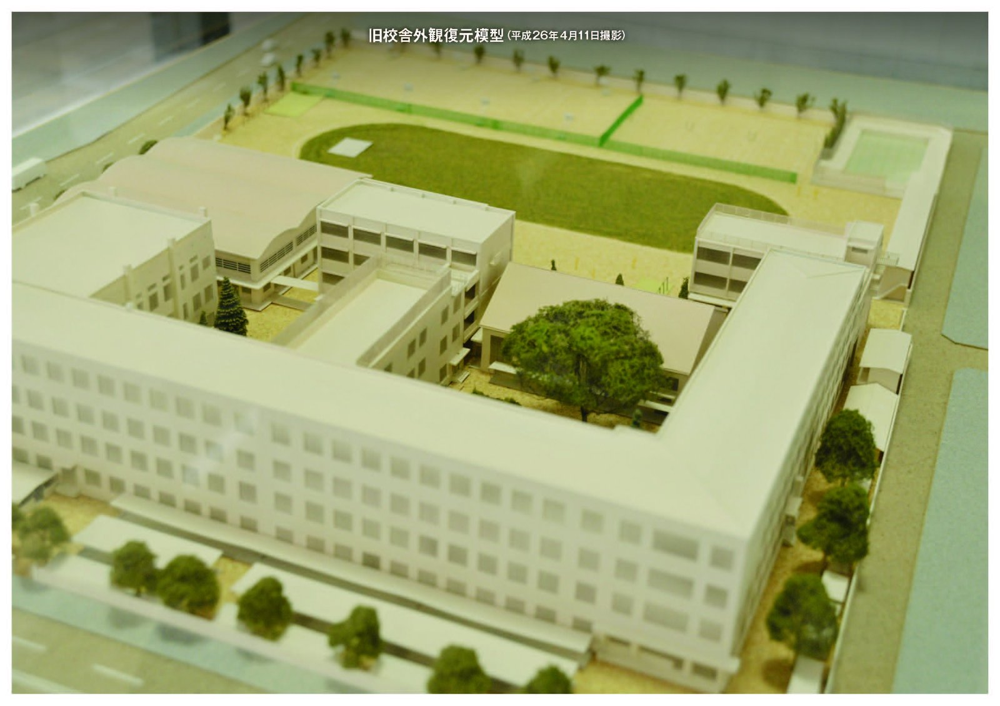
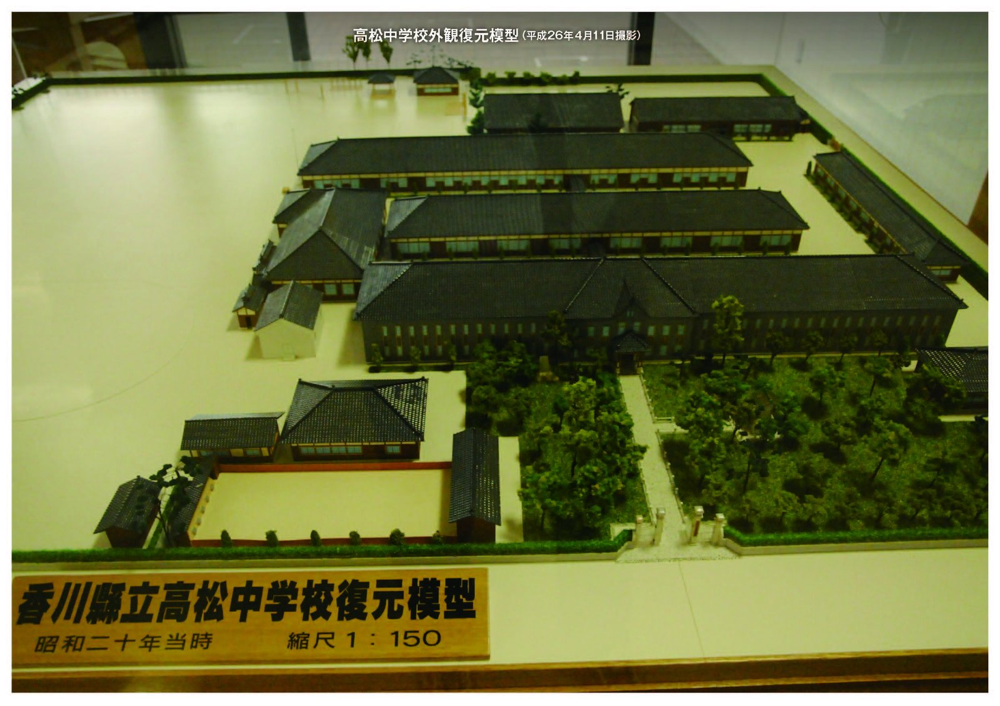
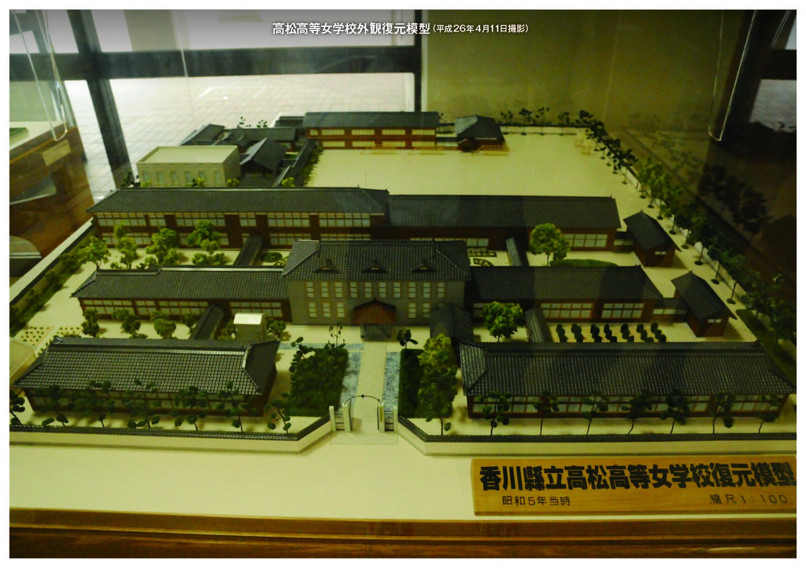

教室模型（昭和45年当時）

教室模型（昭和45年当時）

教室模型（昭和45年当時）

教室模型（昭和45年当時）

香川県立高松高等学校（昭和58年当時）

香川県立高松中学校（昭和20年当時）

香川県立高松高等女学校（昭和5年当時）
昭和の校舎教室復元模型にたずさわって
（玉翠会報第35号(平成26年7月5日発行)より）高松高校教頭（当時） 清谷 守之
平成23年春、昭和の校舎の教室横型を作ることが正式に決定された。
まず、考えたのは業者の選定。私の頭にすぐに浮かんだのは、10年前に、高中と県女の校舎模型を作っていただいた松村さんという方だった。
もう80歳を超えたご高齢の方だが、どうだろうと久しぶりに電話をかけてみた。すると、体調を崩してもう仕事はしていないということであった。しかしながら、私の話を聞いているうちに、もう
一度作ってみたいという気持ちがこみ上げてきたらしく、「主治医の先生に伺ってみる」ということであった。数日後、電話があり、「やはり無理をすると命にかかわるということで、残念ですがあきらめます」ということであった。
その後、いろいろ情報を集めているうち、高松工芸高校の田淵力先生が作ることができるということを聞き、内々に伺ってみると、作れますということだった。
正式に高松工芸高校にお願いに上がったのは、年の瀬も押し迫った(平成23年)12月27日であった。
高松工芸高校の校長室で、本校の土居校長先生と高松工芸高校の丸谷校長先生（昭和46年卒）の間で、せっかく作るのであれば、机といすがくっついていた昭和40年代初期の教室がいいという話になった。
翌日から、それまでに集めた教室の写真をもとに萱原先生と図面を描く日々が続いた。
土居校長先生が、旧校舎から新校舎に引っ越しする様子を撮ったビデオがあるというので、それもお借りして、年末年始は教室が映っている部分を何回も観直して細かい部分をチェックした。
そうしているうち、二つの難題に直面した。
一つは、集めた写真というのは、同一の教室のものではなく、複数の教室の、しかもその一部が映っている写真である。それを眺めていると、特に天井の部分がどれもわずかではあるが、教室ごとに異なっている。正面の黒板の周辺も同様に教室ごとに少しずつ異なっていることに気付いた。復元する教室は、こうだろうと一つに決めて図面を描くしかなかった。
もう一つは、いすがくっついた机の写真がほとんどないことだった。
卒業アルバムに映ってはいるのだが、知りたい肝心な部分が映っていない。
そんな時、丸亀高校によく似た机があるというのを聞き、見に行った。実際見てみると、やはり高松高校のものとは少し異なっていた。しかし、参考になると思い、写真を撮り、大きさもすべて測ってきた。これも、丸亀高校の机をもとに、見えない部分は想像して図面を描くしかなかった。
そうこうしながら、図面も(平成24年)3月の終わりに完成し、4月初めに高松工芸高校の田淵先生に図面をお渡しした。
それから1年と5か月、途中3回土居校長先生や市原校長先生、丸谷校長先生、萱原先生、事務の重松さんと出来具合を見にいき、その場で注文もつけながら、完成したのが、文化祭前日の(平成26年)9月6日の午後であった。
すばらしいできばえである。特に気に入っているのは廊下の部分で、非常にリアルに再現できている。
母校にお立ち寄りの際は、事務室前にすべての模型が陳列してあるので、ぜひ、ご覧いただきたい。ついでに、5階の玉翠ホール前に戦前から現在までの制服を展示して
いるのでご覧いただければ幸いである。